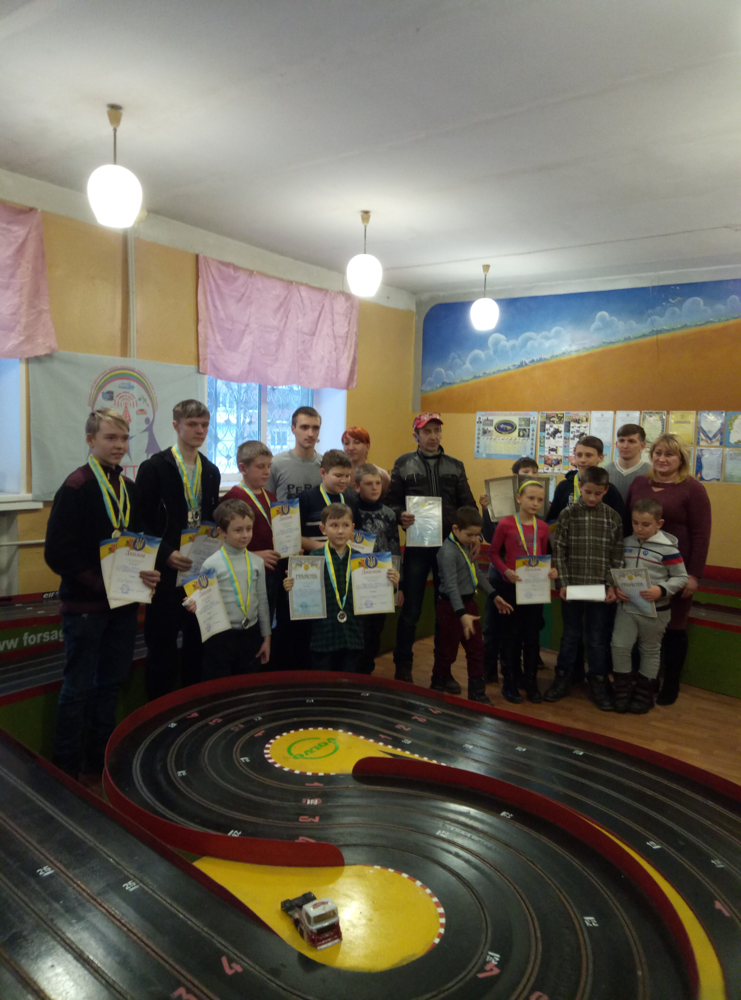
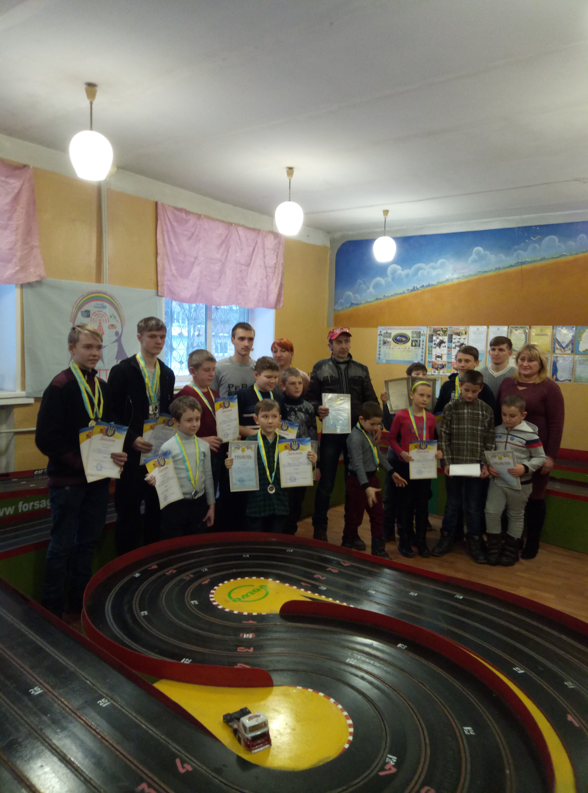
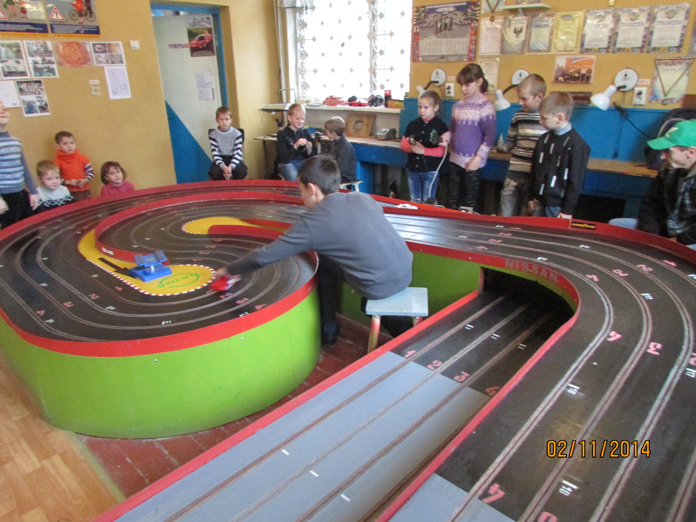
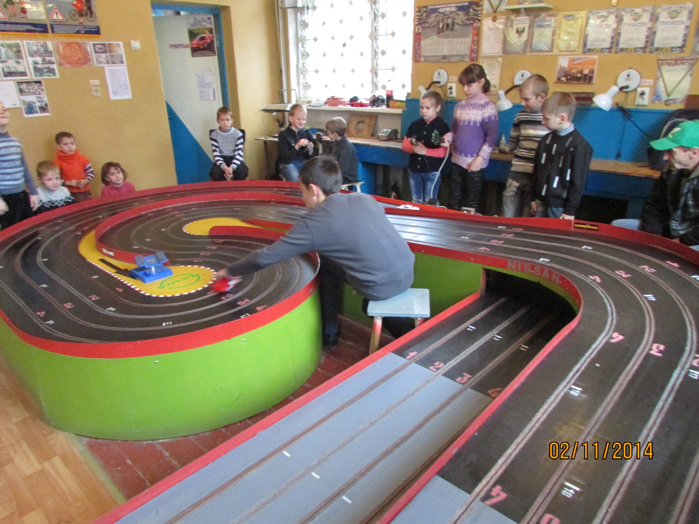

І тільки незмінними залишались захисники України славетні воїни козаки-бійці Збройних Сил України, а з ними у нас і залишилися і їхні традиції введення бойових дій і звичайно відпочинку. Життя на порубіжні лесу і степу, Європейської і Азіатської цивілізацій вимагало від воїнів України перебування у постійному тонусі і готовності протистояти будь-якому ворогу. Цей психофізичний тонус набувався і підтримувався різноманітними козацькими розвагами і забавами, що ними завжди славився український народ. І ми –ветерани АТО і ООС, нашадки славетніх воїнов – козаків, щоб пригадати здобутки предків та дорівнятися до них своїми досягненнями, осучаснити традиції козацтва, вирішили провести серію міні-турнірів з автомодельного спорту – «КОЗАЦЬКІ розваги», між збірною дітей і збірною ветеранів АТО, ООС міста Покровськ і Покровського району.

 

Серія міні-турнірув будуть проводиться у декілька етапів, присвяченних видатним датам Українського народа :14 жовтня-День Українського козацтва, 6 грудня- День Збройних Сил України, 14 березня – День Українського добровольця. Взяти участь в турнірі, в складі збірної ветеранів АТО, ООС ) може будь який ветеран російсько-української війни. Для збірної ветерані попередньо буде проведене коротке навчання і тренування.Для участі в турнірі в складі команди дітей потрібно відвідувати, бути записаним, гурток автомодельного спорту при «Станції юних техників» міста Покровськ. Організатор змагань «Покровська міська організація ветеранів та інвалідів учасників АТО в Донецькій області» разом з позашкільним навчальним закладом «Станція юних техників відділу освіти Покровської міської ради Донецької області». При тпідтримці Відділу культури, туризму та охорони культурної спадщини. управлінню молоді і спорту Покровської міської влади.

 

14 жовтня українці святкують одразу три свята. Перше – Свято Покрови Божої Матері, друге – День українського козацтва, третє свято, дуже молоде – День захисника України. Усі ці свята дуже взаємопов’язані і виникали послідовно 14 жовтня православні християни святкують день Покрови Пресвятої Богородиці. У народі говорять: «Покрова накриває траву листям, землю снігом, воду – льодом, а дівчат – шлюбним вінцем». Це свято вважається одним із найбільш шанованих свят в Україні. Не виникає навіть суперечок між православними українцями й рідновірами, котрі хоч і вкладають у це свято зовсім різний зміст, ставляться до нього дуже шанобливо. Зі святом Покрови співпадає святкування Дня українського козацтва. З давніх-давен Божа Матір вважалася покровителькою усього українського козацтва. А на Січі запорозькі козаки збудували церкву на честь Покрова Богородиці з її іконою. І. до речі, саме у цей день, козаки збирали Велику раду, на котрій обирали гетьмана й визначалися з подальшими військовими планами. Відомий український етнограф Олекса Воропай писав, що після зруйнування Катериною ІІ Запорозької Січі, козаки, ідучи за Дунай, несли з собою ікону Покрови Пресвятої Богородиці Цікаво, що козаки настільки глибоко й щиро шанували образ Покрови Божої Матері, вірили у її силу й урочисто святкували цей день, що у народі закріпилася й друга назва свята – Козацька Покрова. Певно, не знайдеться в Україні людини, яка б не знала про козаків. Про них складено безліч творів, книжок і фільмів. Про козацький рід співається й у нашому державному гімні. Образ сміливого парубка, котрий захищає честь та волю нашого народу, міцно закарбувався у пам’яті поколінь. Тож, козак в українській культурі – звитяжний воїн, озброєний захисник Вітчизни, що боронить віру, гідність та звичаї усього нашого народу. Друга спроба вибороти незалежність українського народу й держави здійснювалася у тяжкі 1917-1920 роки. Третя – уже в наш час – під час розпаду радянської імперії, коли прокинувся волелюбний інтерес до власної історії й генетичної пам'яті. Четверта хвиля цього інтересу, – напевно, сьогоднішня. Адже, з 2015 року 14 жовтня є державним святом і неробочим днем – Днем захисника України.
відгуки
Що про нас кажуть